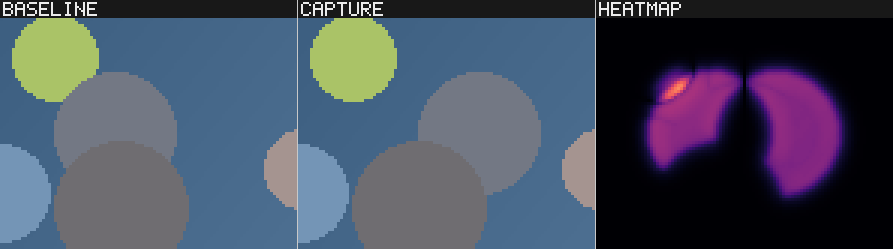

Compare images and inspect the measured differences.
saccade compares baseline images with fresh captures using NVIDIA FLIP, a perceptual error metric. It boxes the regions where the error is, describes the change in plain English and exits 1 on a regression.
Measures perceptual difference under configured viewing conditions. Threshold passes do not prove invisibility.
With --require-matching-meta, undeclared metadata differences are errors.
Built for agents: lean JSON results, hotspot crops, server-side snapshots and an MCP server.
Try it: Rust 1.89+
$ git clone https://github.com/Tavrin/saccade
$ cd saccade
$ cargo run --release -p saccade -- compare examples/baseline examples/capture --out report
{{CASE_COUNT}} cases, with the real commands and output
The gallery runs the commands shown against the procedural datasets in showcases/. scripts/run-showcases.sh reproduces each case's EXPECTED.txt byte for byte with a --features prechecks build. The experimental fixture is listed as unvalidated when that feature is absent. Drag an image to compare.
{{CARDS}}
{{SECTIONS}}
Built for AI agents
Bounded evidence for agents
Measurement summaries use --json. They preserve validity, missingness, counts and typed next_actions. Images an agent needs to look at come as small crops or a rendered snapshot.
MCP server: saccade mcp
A Model Context Protocol server over stdio. Every path the agent passes must resolve under --root; a path that escapes it, through .. or a symlink, is refused with unsafe_path. Every tool declares an output schema.
Six bounded tools. Input roots are read-only; outputs require an explicit out-root. Provider calls require human startup authorization, a finite budget and allowed source-root egress.
compare --json prints saccade-result.v2: the verdict, the totals and each failing entry with its top hotspots. The exit code is the verdict: 0 no regression, 1 regression, 2 usage, config or IO error.
compare --json on the UI case (abridged)
{{LEAN_JSON}}
Judge packs: saccade inspect evidence
Turns a report into one [baseline | capture | heatmap] strip per hotspot, plus explain.json and explain.md. With --blind, each strip is [A | B] in a random order with no heatmap, and the key is written outside the pack.

The strip for seed_105.png in the image-model case.
Snapshots without a browser: saccade inspect export --format png
Renders any view state of a report entry to a PNG on the command line: layout, split, zoom, heatmap and hotspot boxes. Pages also keep their whole view in the URL hash and expose window.saccade for browser automation.
saccade review request prepares one of five closed questions bound to exact evidence. saccade review propose records attributed advice. Models never approve baselines. A human reviews the selected content and authorizes an update; CLI receipts disclose that they have no human attestation.
Decisions you can trust
Evidence validity and review limits
Validity findings, missing evidence and review authority remain explicit.
Mismatched captures are refused
Metadata sidecars record how each image was captured: renderer mode, resolution, driver. With --require-matching-meta, a difference that was not declared is an error, not a pass or a fail. Timing illustrations are paired and shown; performance conclusions require separately qualified evidence.
Validity remains separate
Missing capture context stays unknown. Models cannot establish native equality, qualify timing or repair invalid evidence by agreement.
Both orders
Vision judges see anonymous, contrast-stretched hotspot strips in both orders. An answer that changes with the order becomes needs_human. Results report answer flip rates and first-slot preference rates.
Synthetic controls
Offline controls test contracts and scoring denominators. They do not count as real model-quality support and are not injected into production review.
Calibration against people
saccade review eval --manifest FILE plans score, calibration or conformance jobs. Qualification needs sufficient independent human labels for each question. Incomplete runs remain unqualified; single-labeler test–retest limitations remain visible.
Reproducible evidence
This page is generated from real runs. scripts/run-showcases.sh regenerates the datasets and fails on any byte of difference from EXPECTED.txt; it never accepts new output on its own.
Limits. FLIP measures how visible a difference is, not whether it is a bug: a large change can be intended and a small one can be wrong. HDR-FLIP uses the reference float algorithm through flip-rs; an all-black baseline needs explicit exposures. Nondeterministic captures need a measured threshold, masks or fixed seeds. All limits.